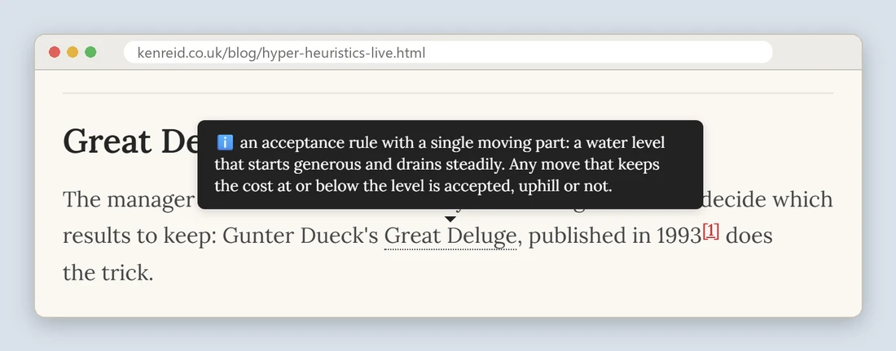
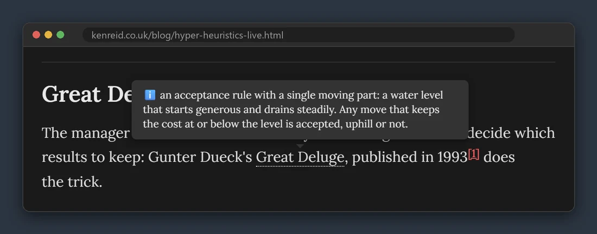

Technology · · 5 min read
The Tooltip Factory
Every post on this site opens with a jargon guide, and every term in it becomes a hover tooltip across the whole article.
Photograph © Ken Reid
The Tooltip Factory
I have an eclectic mix of blogs on my site. I basically just write about whatever I feel like, and hope that I bring in an equally eclectic group of readers. But, this means that my poor friends and family who want to support me might go from a blog about my trip to Trento, Italy, then try and support me by reading about hyper-heuristics, and quickly get lost in the jargon. So - I made a system so that readers can easily hover over underlined words in the box below and a definition appears. Now hover the same words anywhere else in this article: same definition. Since this system is needed in many of my blogs I just made it a feature in all of them. Serendipitously, an example is directly below. Part of the series on how this site is built.
Quick jargon guide
- Tree walker: a browser API (
document.createTreeWalker) for visiting every text node in part of a page, one by one, without touching the elements around them. - Text node: the raw runs of text between HTML tags. "The quick fox" is three nodes: two text, one element.
- abbr element: HTML's built-in "this has an expansion" tag. Given a
title, browsers show it on hover and screen readers can announce it. - Glossary box: the "Quick jargon guide" you are reading right now, which on this site is also a data source. This box is manufactured by the factory it describes, which pleases me more than it should.
Definitions are data
The jargon box at the top of each post is ordinary HTML: a list of <li><strong>Term:</strong> definition</li> lines. The shared JavaScript reads that list and turns it into a dictionary. Then it adds a site-wide base dictionary of terms I was frequently re-defining (AI, ML, LLM, API, JSON, open source, GitHub, Python), with the page's own definitions winning collisions, so a post about a different kind of API can say so (e.g. a beginner-friendly data science blog vs an expert-focused one).
Armed with the dictionary, a tree walker (an ent?) visits every text node in the article and wraps each match in an <abbr> with the definition as its title. Trimmed to its bones:
var walker = document.createTreeWalker(blogPost, NodeFilter.SHOW_TEXT, {
acceptNode: function (node) {
// skip code blocks, headings, links, and the glossary box itself
if (insideSkippedTag(node) || insideSourceBox(node)) return NodeFilter.FILTER_REJECT;
return jargonRegex.test(node.nodeValue) ? NodeFilter.FILTER_ACCEPT
: NodeFilter.FILTER_REJECT;
}
});
// for each matching text node, rebuild it as text + abbr + text
var abbr = document.createElement('abbr');
abbr.setAttribute('title', definition);
abbr.textContent = matchedText;
fragment.appendChild(abbr);-
Written by hand
- Jargon box This post's terms A plain HTML list near the top of the post, one term and its definition per line, like the one folded up at the top of this post.Site-wide terms AI, API, JSON... The handful I kept defining in post after post, kept once in the shared JavaScript.
-
In your browser
- Dictionary The post wins Both lists go into one lookup. When a post defines one of the site-wide terms itself, the post's definition is the one used.
- Tree walker Every text node Visits every run of text in the article and skips code, headings, links and the jargon box itself.
- Tooltips abbr + title Each match is wrapped in an abbr element with the definition as its title, and the stylesheet draws that title as the card.


The drudgery
Matching words in prose is a swamp, and every rule below marks a place I fell in:
- Longest term first. Terms are sorted by length before the regex is built, so "cooling schedule" wins over "cooling" instead of leaving a half-wrapped phrase.
- Plurals match their singular. "Hemispheres" gets the definition for "hemisphere". The reader sees the word as written, the lookup uses the base form.
- Code is off-limits. The walker skips
pre,code, headings, and links. - The box doesn't annotate itself. The glossary box is excluded as a source region, or every definition would sprout tooltips of the terms it defines, recursively, a hall of mirrors ending in a memory issue.
- Manual override exists. A bare
<jargon key="wcag">WCAG</jargon>tag forces a specific definition where automatic matching would guess wrong, and hand-written<abbr>tags are left untouched.
And then the box folds itself away
The first jargon box in a post is automatically collapsed into a click-to-open <details> element. Returning readers scroll past a single line offering to expand into jargon definitions, and the tooltips can be used at-will instead.
Why <abbr> and not a tooltip library: 1. it is the element browsers already understand, 2. it costs zero dependencies, 3. screen readers can work with it, 4. the styling (the dotted underline, the positioning, the theme awareness) is a handful of CSS rules on top of native behaviour, 5. the factory is small, 6. I wanted to work it out!
Common questions
Doesn't rewriting text nodes on every load slow the page down?
It runs once, after the content has painted, on one article's worth of text, and the walker rejects nodes that can't match before doing any work on them. In practice it's a few milliseconds. The cost to the reader is zero, and the saving on my end is every definition I never had to write twice.
Why not define terms inline, like normal writing?
For one or two terms, inline is better and I still do it. The posts that needed this system use eight or ten technical terms, and defining them all inline turns paragraphs into glue. The box up top serves the reader who wants to preload, and the tooltips serve the one who reads first and asks questions later, so the prose gets to stay prose.
What about touchscreens, where there is no hover?
Tapping an abbr shows the tooltip on the mobile browsers I test, and the jargon box remains one tap away at the top as the fallback everyone gets. It's the weakest part of the system. The box and the tooltips are a pair rather than competitors for that reason: whichever one your device is worse at, the other covers.